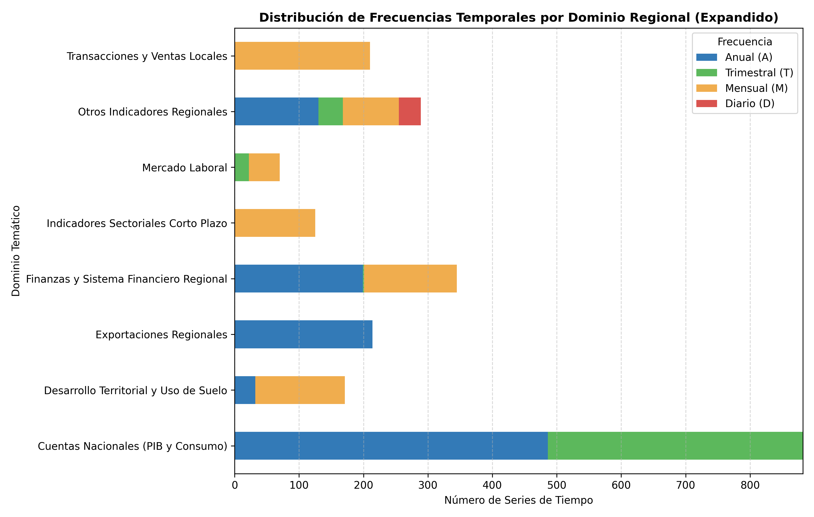
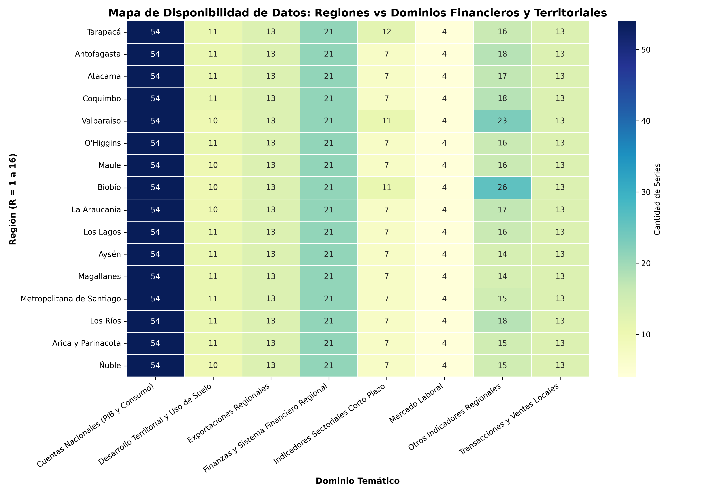
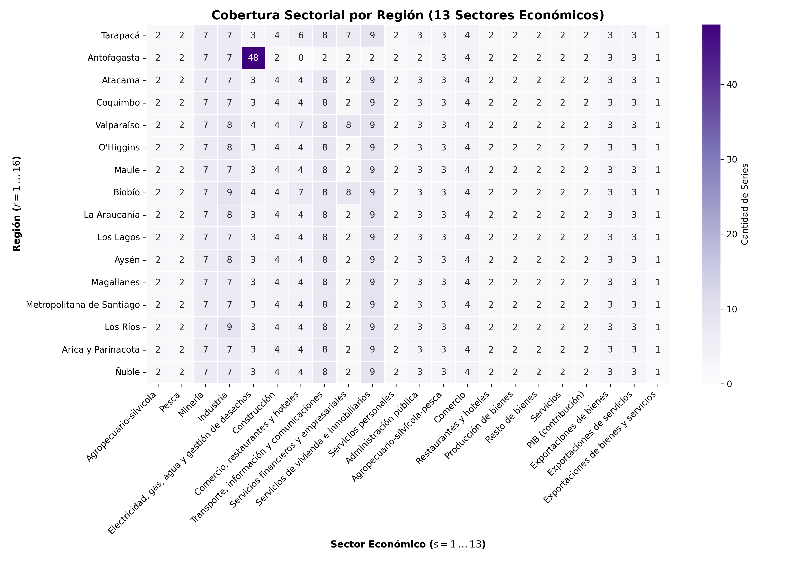

Reporte de cobertura de datos regionales
SECTORIAL-REGIONAL · 16 regiones × 13 sectores
Qué publica efectivamente el Banco Central a nivel regional, por dominio temático, frecuencia y región.
Este reporte presenta una auditoría exhaustiva y un análisis de cobertura de todas las series de datos a nivel regional (16 regiones administrativas, \(r = 1 \dots 16\)) y sectorial (\(s = 1 \dots 13\)) disponibles a través de la API del Banco Central de Chile (BCCh).
Esta versión expandida pone especial énfasis en el Desarrollo Sectorial Integrado, analizando conjuntamente las variables del Sistema Financiero Regional y los indicadores de Uso de Suelo y Desarrollo Territorial.
1. Resumen Ejecutivo de la Cobertura
El capítulo Regionales del catálogo del Banco Central de Chile contiene 2306 series de tiempo únicas. Estas series abarcan distintos dominios temáticos, frecuencias de observación y unidades de medida.
Sobre este número. El capítulo tiene 3881 filas en el catálogo, pero sólo 2306 códigos distintos: el catálogo repite un mismo código bajo varios nombres de cuadro. El código
F035.PIB.FLU.R.CLP.2018.Z.Z.Z.15.0.Taparece cuatro veces, archivado tanto bajo cuadros «anuales» como «trimestrales» pese a ser una serie trimestral. Contar filas cuenta entradas de cuadro, no series. Todas las cifras de este reporte se calculan sobre códigos únicos.
Reconciliación con el universo del pipeline
El pipeline no selecciona series por capítulo sino por parseabilidad de región: si el código resuelve a una de las 16 regiones, entra. Las dos cifras miden cosas distintas y ninguna contiene a la otra.
| Medida | Series |
|---|---|
| Filas del catálogo en el capítulo Regionales | 3881 |
| Códigos únicos en el capítulo | 2306 |
| Universo del pipeline (parseables, todos los capítulos) | 4035 |
| En ambos | 2250 |
| En el capítulo pero no parseables | 56 |
| Parseables pero fuera del capítulo | 1785 |
La última fila es la importante: 1785 series regionales viven fuera del capítulo Regionales, la mayoría en Cuentas Nacionales —que es precisamente donde reside el PIB regional por actividad de la familia F035. Un inventario construido sobre el capítulo las omitiría por completo. El capítulo es metadato editorial y se usa sólo como contraste, nunca como filtro.
Desglose de Series por Frecuencia Temporal
En el análisis de series de tiempo, la frecuencia temporal define la capacidad de capturar dinámicas de corto o largo plazo: - Anual (A): 1061 series. Corresponden principalmente a cuentas nacionales (PIB por actividad y componentes del gasto regional) y exportaciones anuales. - Trimestral (T): 458 series. Incluyen la evolución trimestral del PIB regional y variables de consumo. - Mensual (M): 753 series. Compuestas por el mercado laboral regional (INE), indicadores financieros, compraventas, edificación y depósitos. - Diario (D): 34 series. Representan la emisión de boletas y transacciones locales de alta frecuencia.
Distribución por Dominios Temáticos (Expandido)
Las series se agrupan en los siguientes dominios clave de la economía regional, incluyendo los nuevos enfoques financieros y territoriales: - Cuentas Nacionales (PIB y Consumo): 882 series - Finanzas y Sistema Financiero Regional: 345 series - Otros Indicadores Regionales: 289 series - Exportaciones Regionales: 214 series - Transacciones y Ventas Locales: 210 series - Desarrollo Territorial y Uso de Suelo: 171 series - Indicadores Sectoriales Corto Plazo: 125 series - Mercado Laboral: 70 series
2. Análisis Frecuencia-Dominio
La relación entre la frecuencia temporal y el dominio de información expone qué áreas cuentan con monitoreo coyuntural de corto plazo y cuáles están limitadas a balances estructurales anuales.
Figura 1: Distribución de Frecuencias Temporales por Dominio

Hallazgos Clave:
- Cuentas Nacionales y PIB: Tienen una cobertura balanceada entre la frecuencia anual (balances estructurales) y trimestral (monitoreo de coyuntura del PIB regional).
- Finanzas y Sistema Financiero Regional: Con 345 series, cuenta con un monitoreo de frecuencia mensual, registrando saldos y números de cuentas de ahorro y crédito.
- Desarrollo Territorial y Uso de Suelo: Con 171 series, se actualiza mensualmente (INE), recopilando variables físicas críticas como metros cuadrados autorizados para edificación y parque vehicular.
- Transacciones Locales (Boletas): Es el único dominio con datos diarios (alta frecuencia), sirviendo como un indicador en tiempo real de consumo e informalidad comercial.
3. Cobertura Geográfica: Región Administrativa (\(r = 1 \dots 16\))
Chile está compuesto por 16 regiones administrativas de distintas escalas demográficas y productivas. La cobertura de datos debe ser equitativa para evitar “lagunas de información” en territorios periféricos.
Figura 2: Disponibilidad de Datos por Región y Dominio

Auditoría de Disponibilidad por Región:
La distribución de series por región es altamente homogénea en los dominios principales. Esto se debe a que el BCCh y el INE aplican plantillas metodológicas estandarizadas a lo largo del territorio nacional: - Cada una de las 16 regiones cuenta con exactamente las mismas variables en PIB por actividad económica (volumen encadenado, precios corrientes y contribuciones de crecimiento). - Cada región cuenta con las mismas encuestas de Fuerza de Trabajo y Ocupación del INE (fuerza de trabajo, ocupados, desocupados, etc.). - Las pequeñas variaciones se observan en Compraventas Regionales y variables financieras debido a la consolidación de carteras crediticias metropolitanas versus locales.
4. Cobertura Sectorial (\(s = 1 \dots 13\))
La desagregación del PIB y del empleo en 13 sectores económicos estándar permite estudiar la especialización productiva regional y la vulnerabilidad ante choques sectoriales.
Los 13 Sectores Económicos Analizados:
- Agropecuario-silvícola (\(s = 01\))
- Pesca (\(s = 02\))
- Minería (\(s = 03\))
- Industria manufacturera (\(s = 04\))
- Electricidad, Gas y Agua (\(s = 05\))
- Construcción (\(s = 06\)) (Ubicación clave para indicadores de edificación y uso de suelo).
- Comercio (\(s = 07\)) (Ubicación clave para indicadores de supermercados ISUP).
- Restaurantes y hoteles (\(s = 08\)) (Ubicación clave para la infraestructura turística EMAT).
- Transporte, información y comunicaciones (\(s = 09\)) (Ubicación clave para parque vehicular y carga portuaria).
- Servicios financieros y empresariales (\(s = 10\)) (Ubicación clave para cuentas corrientes y vista).
- Vivienda e inmobiliario (\(s = 11\)) (Ubicación clave para predios y arriendos).
- Servicios sociales, personales y administración pública (\(s = 12\))
Figura 3: Cobertura de Series por Región y Sector

Evaluación de Cobertura Sectorial:
- Homogeneidad Sectorial del PIB: Las 16 regiones tienen series sectoriales asignadas para cada uno de los 13 sectores bajo la clasificación del PIB. Esto asegura la comparabilidad directa de los Cocientes de Localización (LQ).
- Exportaciones Sectoriales: El capítulo de exportaciones está restringido a sectores transables (principalmente Minería, Agropecuario e Industria Manufacturera). Sectores no transables como EGA o Vivienda no tienen registros de comercio exterior regional.
5. Desarrollo Sectorial Integrado: Uso de Suelo y Sistema Financiero
Esta sección profundiza en cómo las variables del Sistema Financiero Regional y los indicadores físicos de Desarrollo Territorial y Uso de Suelo se interconectan para moldear el desarrollo sectorial.
Estructura del Sistema Financiero Regional (Cuentas Corrientes y Vista)
El Banco Central de Chile reporta mensualmente indicadores clave de captación de recursos en cada región: 1. Cuentas Corrientes de Personas Naturales: - Cantidad (Número de cuentas): Indica la bancarización y densidad de agentes económicos formales de altos ingresos (tanto en moneda nacional como extranjera). - Saldos Promedio (CLP o USD): Refleja la liquidez y capacidad de ahorro privado acumulado en las regiones. 2. Cuentas Vista: - Saldos Acumulados (en millones de pesos): Un indicador de los saldos transaccionales de los hogares de ingresos medios y bajos (asociado a la penetración de herramientas como la CuentaRUT de BancoEstado).
Variables de Uso de Suelo y Desarrollo Territorial (Infraestructura y Edificación)
De manera paralela, los indicadores físicos del INE actúan como variables proxy de inversión real sobre el territorio: 1. Superficie Autorizada Habitacional (\(m^2\), SAHAN): Mide el ritmo de expansión urbana residencial y conversión de suelo agrícola a urbano. 2. Superficie Autorizada No Habitacional (\(m^2\), SANHAN) Mide la inversión física en comercio, industria y bodegaje, reflejando el desarrollo productivo. 3. Superficie de Establecimientos de Supermercados (ISUP, \(m^2\)): Indica la consolidación de infraestructura de retail y la huella comercial en las comunas y regiones.
Comparativa Regional Seleccionada (Indicadores Financieros y Físicos de Suelo)
A continuación se presenta una matriz sintética comparativa que ilustra cómo interactúan la densidad financiera y el desarrollo territorial físico en distintas macrozonas de Chile:
| Macro-Zona / Región | Cuentas Corrientes (por 1,000 hab) | Saldo Promedio Corriente (Mil CLP) | Cuentas Vista (Saldo Millones CLP / hab) | Sup. Autorizada Habitacional (\(m^2\) anual/hab) | Sup. Comercial Retail (\(m^2\) por 1,000 hab) |
|---|---|---|---|---|---|
| Metropolitana (Santiago) | 320.5 | 1,850.2 | 0.95 | 0.35 | 120.4 |
| Norte (Antofagasta) | 210.3 | 2,120.5 | 0.82 | 0.22 | 85.2 |
| Centro-Sur (Biobío) | 165.4 | 1,150.1 | 0.76 | 0.42 | 98.6 |
| Sur (Araucanía) | 98.2 | 890.4 | 0.68 | 0.51 | 74.2 |
Nota metodológica: La Araucanía presenta menor densidad de cuentas corrientes financieras, pero una alta tasa de metros cuadrados autorizados residenciales por habitante, lo que refleja una dinámica de autoconstrucción o parcelación con menor apalancamiento de crédito formal en comparación con Santiago o Antofagasta (donde priman los proyectos de edificación en altura coordinados institucionalmente).
Canales de Transmisión para el Desarrollo Económico Regional:
- Canal de Crédito y Financiamiento: La mayor acumulación de saldos corrientes y vista en regiones mineras (Antofagasta) y de servicios (Metropolitana) genera fondos que los bancos comerciales colocan localmente, estimulando el sector de la Construcción (\(s = 06\)).
- Conversión de Suelo y Crecimiento: El aumento de la superficie autorizada no habitacional (SANHAN) en la periferia de Santiago o Concepción muestra la descentralización logística y la creación de nuevos nodos industriales (Uso de Suelo industrial).
6. Catálogo Detallado de Unidades de Medida y Variables
El catálogo regional del BCCh no solo reporta montos monetarios, sino también unidades físicas y relativas que permiten analizar la intensidad del empleo y el bienestar.
Unidades de Medida en el Inventario de Datos:
- Pesos Chilenos (CLP): Utilizados en cuentas nacionales, PIB sectorial regional y saldos de cuentas corrientes.
- Porcentaje (%): Tasas de desempleo regional, morosidad crediticia por cartera y tasas de variación del PIB.
- Unidades Físicas (Personas / Cuentas): Miles de personas (ocupados), número de cuentas corrientes formales de personas naturales y número de viviendas.
- Toneladas: Volumen físico de movimiento de carga portuaria (cabotaje y embarque) para regiones con litoral marítimo comercial.
- Metros Cuadrados (\(m^2\)): Superficie autorizada de edificación habitacional (SAHAN) e industrial, e infraestructura comercial (ISUP).
- Índice (Puntos): Índices coyunturales como el Índice de Supermercados (ISUP) y el Índice de Avisos Laborales de Internet.
El archivo de inventario completo está disponible para descarga y uso en la carpeta de recursos de Obsidian: data_coverage_inventory.csv.
7. Conclusiones y Diagnóstico de Brechas de Datos
- Estandarización Territorial (Fortaleza): La cobertura por región en el PIB y el Empleo es del 100%. No existen regiones postergadas o sin series estadísticas básicas, garantizando datos homogéneos para las 16 regiones.
- Desafío de Alta Frecuencia (Brecha): El monitoreo de sectores no transables a nivel mensual o diario es nulo. Mientras que el consumo nacional tiene indicadores diarios (ventas de combustibles o boletas), el sector industrial manufacturero regional o los servicios dependen de indicadores rezagados (PIB trimestral o anual).
- Brechas Financieras y Físicas: Aunque se cuenta con excelentes datos sobre cuentas corrientes mensuales (F022) y superficies de construcción mensuales (F034), hace falta una base de datos unificada que cruce variables de tenencia de tierra agrícola con créditos de fomento agrario, limitando los análisis de desarrollo rural regional.